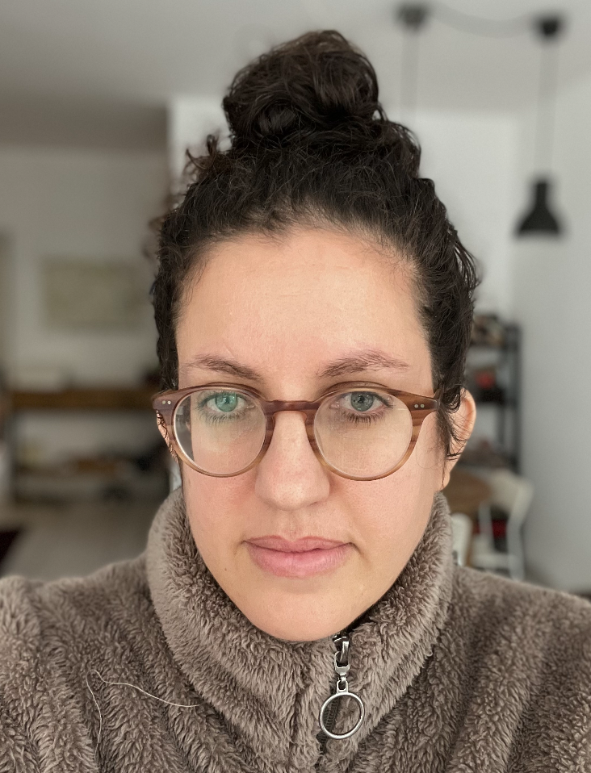

Avigail Bahat's Resume

Born, raised, live, and work in Tel Aviv, Israel. Specializing in UX and trying out Code.
Contact me
Education
- 2012 - Netcraft Academy, UX course
- 2006-2010 - Shenkar College of Engineering and Design, Israel: B.Des. in Graphic Design
Work Experience
- 2014-Now - UX Designer at Wix.com
- 2012-2013 - Marketing Designer at Wix.com
- 2010-2012 - Graphic designer at Mccann Erickson Israel
- 2008-2010 - Graphics department at Walla.co.il
Skills
Google Suite, Figma, Photoshop, Illustrator & Indesign
Languages
Hebrew (native speaker); English
Publications & Exhibitions
- 2011 - My work, "Cassius" appeared in Boxed and Labelled 2 by Gestalten Publishing, Berlin
- 2011 - My work, "Cassius" appeared on The Dieline
- 2010 - Final project exhibition, Shenkar College of Engineering and Design
- 2009 - My work, "Platon" appeared in Boxed and Labelled by Gestalten Publishing, Berlin
- 2009 - My work, "Platon" appeared on The Dieline